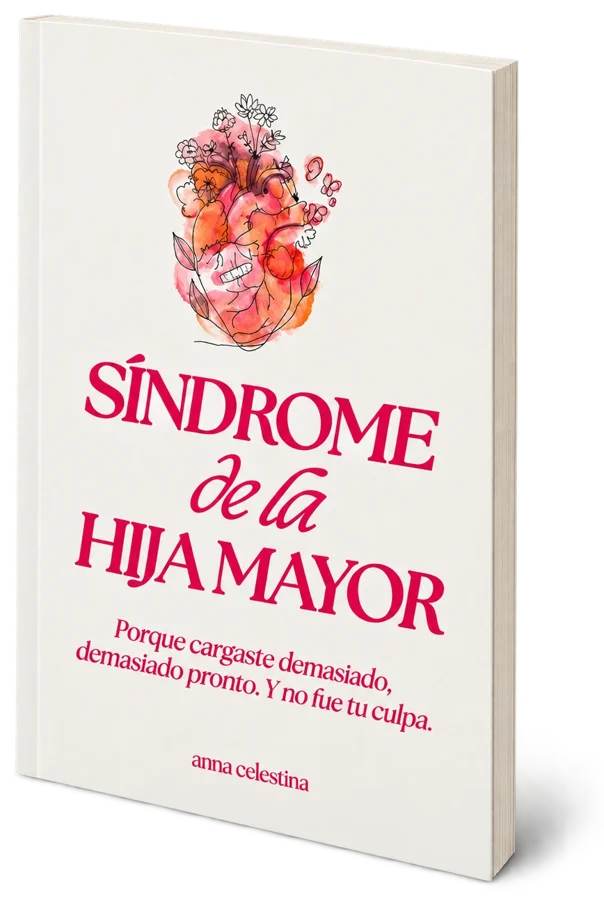

¿cuántas veces te dijeron “eres muy madura para tu edad”?
al principio sonaba a cumplido. pero para muchas de nosotras, esas palabras traían un contrato que nadie dijo en voz alta: sé responsable. sé madura. y no le compliques la vida a nadie.
en algún momento, que te necesitaran empezó a sentirse más seguro que tener tus propias necesidades.
así que te volviste la responsable. la que lo arregla todo. la que leía el ambiente antes de que alguien abriera la boca.
no te volviste así porque algo estuviera mal contigo. te convertiste en lo que necesitabas ser para sobrevivir. y con el tiempo, sobrevivir se volvió lo normal.
la verdadera razón por la que te sientes así
la herida de la hija mayor no es un diagnóstico que vayas a encontrar en un libro de medicina, pero es una realidad vivida, grabada en tu sistema nervioso. se nota en cómo te mueves por el mundo: siempre responsable, siempre confiable, siempre alerta.
es lo que pasa cuando tu valor se mide por lo útil que eres, cuando el amor parece estar ligado al rendimiento y cuando descansar se siente como flojera en vez de sanación.
deja huellas en todas partes: en cómo pides perdón por existir, en cómo te sientes culpable por querer más, en cómo te cuesta pedir ayuda porque, en el fondo, aprendiste que nadie va a venir.
no es solo estrés o personalidad. es una identidad formada por el deber, la culpa y contratos invisibles que nunca aceptaste firmar.
por qué escribí esto
yo también soy hija mayor. durante años cargué un peso que nunca elegí. era la que cuidaba a todos, la fuerte, la que sostenía todo. la niña brillante que terminó agotada y nunca aprendió a descansar.
podía explicar la herida a la perfección. había leído los posts, visto los videos, se los mandaba a mis amigas con un “literal soy yo”. y aun así me sentía culpable cada vez que me sentaba a descansar.
porque ser consciente no transforma los patrones grabados en tu sistema nervioso. tienes que hacer algo con eso: escribir, reflexionar, experimentar y llorar. decir que no una vez y ver qué pasa.
así que escribí el cuaderno que me hubiera gustado que alguien me diera. empieza con las señales de la herida. sé honesta:
- pido perdón por emociones que puedan incomodar a otros.
- percibo la tensión en una habitación antes de que alguien diga algo.
- he sido “madura para mi edad” desde los 8 años.
- me siento culpable cuando no soy productiva.
- soy la terapeuta de todos, pero nadie es mi paciente.
- pedir ayuda se siente como debilidad.
- en secreto, deseo que alguien me cuide a mí.
- confundo ser amada con ser útil.
¿marcaste aunque sea una? bienvenida al club de las hijas mayores.
qué hay adentro
este libro no trata de arreglarte de la noche a la mañana, sino de ir paso a paso hacia una vida más ligera. ejercicios guiados, basados en principios terapéuticos comprobados. no está aquí para describir la herida, sino para ayudarte a atravesarla.
índice
- cap. 01el peso que nunca elegistep. 4
- cap. 02dónde empezó todop. 10
- cap. 03por qué fingir que estás bien no funcionap. 19
- cap. 04tu sanación empieza aquíp. 22
- cap. 05el día que terminó mi infanciap. 23
- cap. 06culpa de hermana mayorp. 33
- cap. 07la hermana enojona y malap. 42
- cap. 08la mentira de “no necesito a nadie”p. 49
- cap. 09tu trabajo no es tu valorp. 55
- cap. 10el cuerpo lo recuerda todop. 67
- cap. 11amada, no solo necesitadap. 75
- cap. 12el cajero automático familiar (límites financieros)p. 86
- cap. 13las heridas que heredamosp. 91
- cap. 14soy tu hermana, no tu mamáp. 98
- cap. 15convirtiéndote en la niña que nunca pudiste serp. 106
- cap. 16el ciclo termina contigop. 118
y los ejercicios por los que más me escriben: el ejercicio de la llamada con mamá (un plan para esas llamadas que te mueven todo: cuánto tiempo vas a estar, temas seguros, una frase para despedirte y cómo cuidarte después) y el permiso oficial, una nota firmada donde te das permiso de vivir la infancia que no tuviste.
ahora mismo
- te sientes culpable cuando no eres productiva
- confundes ser amada con ser útil
- estás agotada en el cuerpo, no solo en la mente
- lees el ambiente antes de que alguien hable
- la terapeuta de todos, pero nadie te cuida a ti
después del libro
- tu sistema nervioso por fin baja la guardia
- un cuerpo que ya no vive esperando el próximo problema
- límites que se respetan, incluso en casa
- descansar sin culpa
- ser amada por quien eres, no por lo que haces
descarga inmediata · reembolso en 14 días
lo que dicen otras hijas mayores
ver 4 respuestas más ⌄
tu sanación empieza aquí
hazlo a tu ritmo. no tienes que hacerlo todo de una vez. algunos ejercicios se sentirán ligeros, otros dolerán. eso es normal. tu única tarea es ser honesta, no perfecta.
respira hondo. pasa la página. vamos a empezar.
síndrome de la hija mayor

un solo pago. sin suscripción. es tuyo para siempre.
- el libro síndrome de la hija mayor, en ebook
- acceso inmediato y de por vida, en cualquier dispositivo
preguntas frecuentes
¿es un libro físico?
¿y si no me sirve?
¿cómo lo recibo después de pagar?
no soy la hija mayor. ¿igual me sirve?
ya fui a terapia y leí muchos libros. ¿por qué esto me ayudaría?
todo lo que avanzo se me borra apenas estoy con mi familia.
¿tengo que terminarlo de una vez?
¿lo puedo regalar?
descarga inmediata · reembolso en 14 días
pasaste años convirtiéndote en lo que todos necesitaban.
ya es hora de convertirte en ti.
con cariño,
anna
pd: el precio de lanzamiento es $9 (normalmente $29). si estás dudando, cómpralo, haz el primer capítulo esta noche y, si no te convence, te devuelvo tu dinero. quiero el libro →